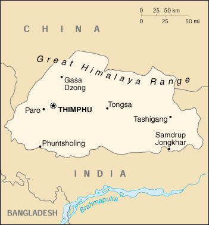

|
Bhutan | |
| Introduction Geography People Government Economy Communications Transportation Military Transnational Issues | ||
|  | ||
| Bhutan | Introduction | Top of Page |
| Background: | Under British influence a monarchy was set up in 1907; three years later a treaty was signed whereby the country became a British protectorate. Independence was attained in 1949, with India subsequently guiding foreign relations and supplying aid. A refugee issue of some 100,000 Bhutanese in Nepal remains unresolved; 90% of these displaced persons are housed in seven United Nations Office of the High Commissioner for Refugees (UNHCR) camps. Maoist Assamese separatists from India, who have established themselves in the southeast portion of Bhutan, have drawn Indian cross-border incursions. |
| Bhutan | Geography | Top of Page |
| Location: | Southern Asia, between China and India |
| Geographic coordinates: | 27 30 N, 90 30 E |
| Map references: | Asia |
| Area: |
total:
47,000 sq km
land: 47,000 sq km water: 0 sq km |
| Area - comparative: | about half the size of Indiana |
| Land boundaries: |
total:
1,075 km
border countries: China 470 km, India 605 km |
| Coastline: | 0 km (landlocked) |
| Maritime claims: | none (landlocked) |
| Climate: | varies; tropical in southern plains; cool winters and hot summers in central valleys; severe winters and cool summers in Himalayas |
| Terrain: | mostly mountainous with some fertile valleys and savanna |
| Elevation extremes: |
lowest point:
Drangme Chhu 97 m
highest point: Kula Kangri 7,553 m |
| Natural resources: | timber, hydropower, gypsum, calcium carbide |
| Land use: |
arable land:
2%
permanent crops: 0% permanent pastures: 6% forests and woodland: 66% other: 26% (1993 est.) |
| Irrigated land: | 340 sq km (1993 est.) |
| Natural hazards: | violent storms coming down from the Himalayas are the source of the country's name which translates as Land of the Thunder Dragon; frequent landslides during the rainy season |
| Environment - current issues: | soil erosion; limited access to potable water |
| Environment - international agreements: |
party to:
Biodiversity, Climate Change, Nuclear Test Ban
signed, but not ratified: Law of the Sea |
| Geography - note: | landlocked; strategic location between China and India; controls several key Himalayan mountain passes |
| Bhutan | People | Top of Page |
| Population: |
2,049,412 (July 2001 est.)
note: other estimates range as low as 800,000 |
| Age structure: |
0-14 years:
39.99% (male 424,832; female 394,725)
15-64 years: 56.05% (male 591,152; female 557,498) 65 years and over: 3.96% (male 41,125; female 40,080) (2001 est.) |
| Population growth rate: | 2.17% (2001 est.) |
| Birth rate: | 35.73 births/1,000 population (2001 est.) |
| Death rate: | 14.03 deaths/1,000 population (2001 est.) |
| Net migration rate: | 0 migrant(s)/1,000 population (2001 est.) |
| Sex ratio: |
at birth:
1.05 male(s)/female
under 15 years: 1.08 male(s)/female 15-64 years: 1.06 male(s)/female 65 years and over: 1.03 male(s)/female total population: 1.07 male(s)/female (2001 est.) |
| Infant mortality rate: | 108.89 deaths/1,000 live births (2001 est.) |
| Life expectancy at birth: |
total population:
52.79 years
male: 53.16 years female: 52.41 years (2001 est.) |
| Total fertility rate: | 5.07 children born/woman (2001 est.) |
| HIV/AIDS - adult prevalence rate: | less than 0.01% (1999 est.) |
| HIV/AIDS - people living with HIV/AIDS: | less than 100 (1999 est.) |
| HIV/AIDS - deaths: | NA |
| Nationality: |
noun:
Bhutanese (singular and plural)
adjective: Bhutanese |
| Ethnic groups: | Bhote 50%, ethnic Nepalese 35%, indigenous or migrant tribes 15% |
| Religions: | Lamaistic Buddhist 75%, Indian- and Nepalese-influenced Hinduism 25% |
| Languages: | Dzongkha (official), Bhotes speak various Tibetan dialects, Nepalese speak various Nepalese dialects |
| Literacy: |
definition:
age 15 and over can read and write
total population: 42.2% male: 56.2% female: 28.1% (1995 est.) |
| Bhutan | Government | Top of Page |
| Country name: |
conventional long form:
Kingdom of Bhutan
conventional short form: Bhutan |
| Government type: | monarchy; special treaty relationship with India |
| Capital: | Thimphu |
| Administrative divisions: |
18 districts (dzongkhag, singular and plural); Bumthang, Chhukha, Chirang, Daga, Geylegphug, Ha, Lhuntshi, Mongar, Paro, Pemagatsel, Punakha, Samchi, Samdrup Jongkhar, Shemgang, Tashigang, Thimphu, Tongsa, Wangdi Phodrang
note: there may be two new districts named Gasa and Yangtse |
| Independence: | 8 August 1949 (from India) |
| National holiday: | National Day (Ugyen WANGCHUCK became first hereditary king), 17 December (1907) |
| Constitution: | no written constitution or bill of rights; note - Bhutan uses 1953 Royal decree for the Constitution of the National Assembly; on 7 July 1998, a Royal edict was ratified giving the National Assembly additional powers |
| Legal system: | based on Indian law and English common law; has not accepted compulsory ICJ jurisdiction |
| Suffrage: | each family has one vote in village-level elections |
| Executive branch: |
chief of state:
King Jigme Singye WANGCHUCK (since 24 July 1972)
head of government: Chairman of the Council of Ministers Sangay NGEDUP (since NA 1999) cabinet: Council of Ministers (Lhengye Shungtsog) nominated by the monarch, approved by the National Assembly; members serve fixed, five-year terms; note - there is also a Royal Advisory Council (Lodoi Tsokde), members nominated by the monarch elections: none; the monarch is hereditary, but democratic reforms in July 1998 give the National Assembly authority to remove the monarch with two-thirds vote |
| Legislative branch: |
unicameral National Assembly or Tshogdu (150 seats; 105 elected from village constituencies, 10 represent religious bodies, and 35 are designated by the monarch to represent government and other secular interests; members serve three-year terms)
elections: last held NA (next to be held NA) election results: NA |
| Judicial branch: | Supreme Court of Appeal (the monarch); High Court (judges appointed by the monarch) |
| Political parties and leaders: | no legal parties |
| Political pressure groups and leaders: | Buddhist clergy; ethnic Nepalese organizations leading militant antigovernment campaign; Indian merchant community; United Front for Democracy (exiled) |
| International organization participation: | AsDB, CP, ESCAP, FAO, G-77, IBRD, ICAO, IDA, IFAD, IMF, Intelsat, IOC, IOM (observer), ITU, NAM, OPCW, SAARC, UN, UNCTAD, UNESCO, UNIDO, UPU, WHO, WIPO, WTrO (observer) |
| Diplomatic representation in the US: |
none; note - Bhutan has a Permanent Mission to the UN; address: 2 United Nations Plaza, 27th Floor, New York, NY 10017; telephone [1] (212) 826-1919; the Bhutanese mission to the UN has consular jurisdiction in the US
consulate(s) general: New York |
| Diplomatic representation from the US: | the US and Bhutan have no formal diplomatic relations, although informal contact is maintained between the Bhutanese and US Embassy in New Delhi (India) |
| Flag description: | divided diagonally from the lower hoist side corner; the upper triangle is yellow and the lower triangle is orange; centered along the dividing line is a large black and white dragon facing away from the hoist side |
| Bhutan | Economy | Top of Page |
| Economy - overview: | The economy, one of the world's smallest and least developed, is based on agriculture and forestry, which provide the main livelihood for more than 90% of the population. Agriculture consists largely of subsistence farming and animal husbandry. Rugged mountains dominate the terrain and make the building of roads and other infrastructure difficult and expensive. The economy is closely aligned with India's through strong trade and monetary links. The industrial sector is technologically backward, with most production of the cottage industry type. Most development projects, such as road construction, rely on Indian migrant labor. Bhutan's hydropower potential and its attraction for tourists are key resources. The Bhutanese Government has made some progress in expanding the nation's productive base and improving social welfare. Model education, social, and environment programs in Bhutan are underway with support from multilateral development organizations. Each economic program takes into account the government's desire to protect the country's environment and cultural traditions. Detailed controls and uncertain policies in areas like industrial licensing, trade, labor, and finance continue to hamper foreign investment. |
| GDP: | purchasing power parity - $2.3 billion (2000 est.) |
| GDP - real growth rate: | 6% (2000 est.) |
| GDP - per capita: | purchasing power parity - $1,100 (2000 est.) |
| GDP - composition by sector: |
agriculture:
38%
industry: 37% services: 25% (2000 est.) |
| Population below poverty line: | NA% |
| Household income or consumption by percentage share: |
lowest 10%:
NA%
highest 10%: NA% |
| Inflation rate (consumer prices): | 7% (2000 est.) |
| Labor force: |
NA
note: massive lack of skilled labor |
| Labor force - by occupation: | agriculture 93%, services 5%, industry and commerce 2% |
| Unemployment rate: | NA% |
| Budget: |
revenues:
$146 million
expenditures: $152 million, including capital expenditures of $NA (FY95/96 est.) note: the government of India finances nearly three-fifths of Bhutan's budget expenditures |
| Industries: | cement, wood products, processed fruits, alcoholic beverages, calcium carbide |
| Industrial production growth rate: | 9.3% (1996 est.) |
| Electricity - production: | 1.856 billion kWh (1999) |
| Electricity - production by source: |
fossil fuel:
0.05%
hydro: 99.95% nuclear: 0% other: 0% (1999) |
| Electricity - consumption: | 191.1 million kWh (1999) |
| Electricity - exports: | 1.55 billion kWh (1999) |
| Electricity - imports: | 15 million kWh (1999) |
| Agriculture - products: | rice, corn, root crops, citrus, foodgrains; dairy products, eggs |
| Exports: | $154 million (f.o.b., 2000 est.) |
| Exports - commodities: | cardamom, gypsum, timber, handicrafts, cement, fruit, electricity (to India), precious stones, spices |
| Exports - partners: | India 94%, Bangladesh |
| Imports: | $269 million (c.i.f., 2000 est.) |
| Imports - commodities: | fuel and lubricants, grain, machinery and parts, vehicles, fabrics, rice |
| Imports - partners: | India 77%, Japan, UK, Germany, US |
| Debt - external: | $120 million (1998) |
| Economic aid - recipient: | $73.8 million (1995) |
| Currency: | ngultrum (BTN); Indian rupee (INR) |
| Currency code: | BTN; INR |
| Exchange rates: | ngultrum per US dollar - 46.540 (January 2001), 44.942 (2000), 43.055 (1999), 41.259 (1998), 36.313 (1997), 35.433 (1996); note - the Bhutanese ngultrum is at par with the Indian rupee which is also legal tender |
| Fiscal year: | 1 July - 30 June |
| Bhutan | Communications | Top of Page |
| Telephones - main lines in use: | 6,000 (1997) |
| Telephones - mobile cellular: | NA |
| Telephone system: |
general assessment:
NA
domestic: domestic telephone service is very poor with few telephones in use international: international telephone and telegraph service is by landline through India; a satellite earth station was planned (1990) |
| Radio broadcast stations: | AM 0, FM 1, shortwave 1 (1998) |
| Radios: | 37,000 (1997) |
| Television broadcast stations: | 0 (1997) |
| Televisions: | 11,000 (1997) |
| Internet country code: | .bt |
| Internet Service Providers (ISPs): | NA |
| Internet users: | 500 (2000) |
| Bhutan | Transportation | Top of Page |
| Railways: | 0 km |
| Highways: |
total:
3,285 km
paved: 1,994 km unpaved: 1,291 km (1996) |
| Waterways: | none |
| Ports and harbors: | none |
| Airports: | 2 (2000 est.) |
| Airports - with paved runways: |
total:
1
1,524 to 2,437 m: 1 (2000 est.) |
| Airports - with unpaved runways: |
total:
1
914 to 1,523 m: 1 (2000 est.) |
| Bhutan | Military | Top of Page |
| Military branches: | Royal Bhutan Army, National Militia, Royal Bhutan Police, Royal Body Guards, Forest Guards (paramilitary) |
| Military manpower - military age: | 18 years of age |
| Military manpower - availability: | males age 15-49: 504,342 (2001 est.) |
| Military manpower - fit for military service: | males age 15-49: 269,251 (2001 est.) |
| Military manpower - reaching military age annually: | males: 21,167 (2001 est.) |
| Military expenditures - dollar figure: | $NA |
| Military expenditures - percent of GDP: | NA% |
| Bhutan | Transnational Issues | Top of Page |
| Disputes - international: | refugee issue over the presence in Nepal of approximately 98,700 Bhutanese refugees, 90% of whom are in seven United Nations Office of the High Commissioner for Refugees (UNHCR) camps |
{kind=link}
{kind=link}